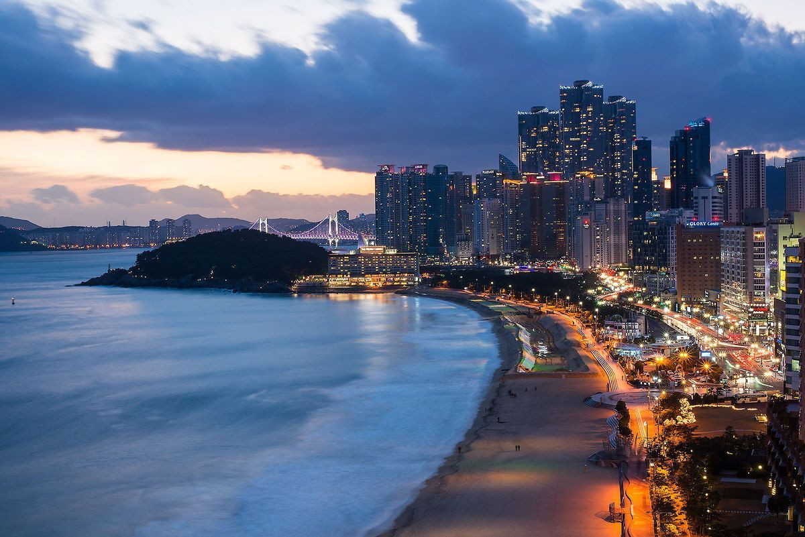
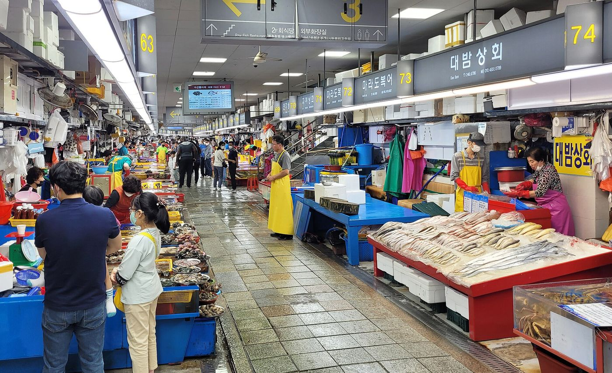
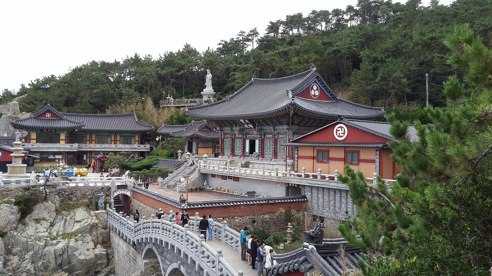
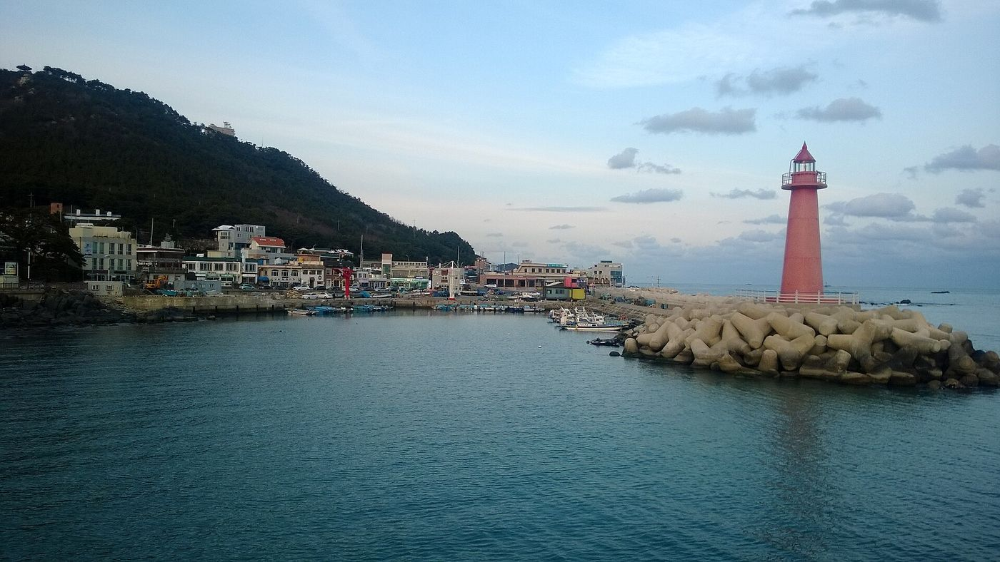
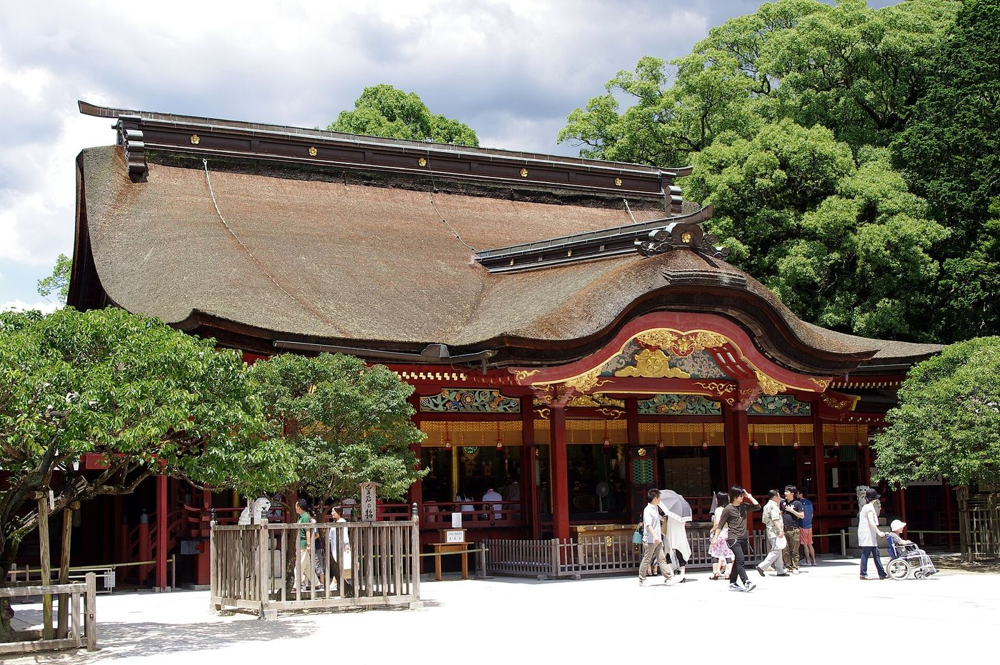
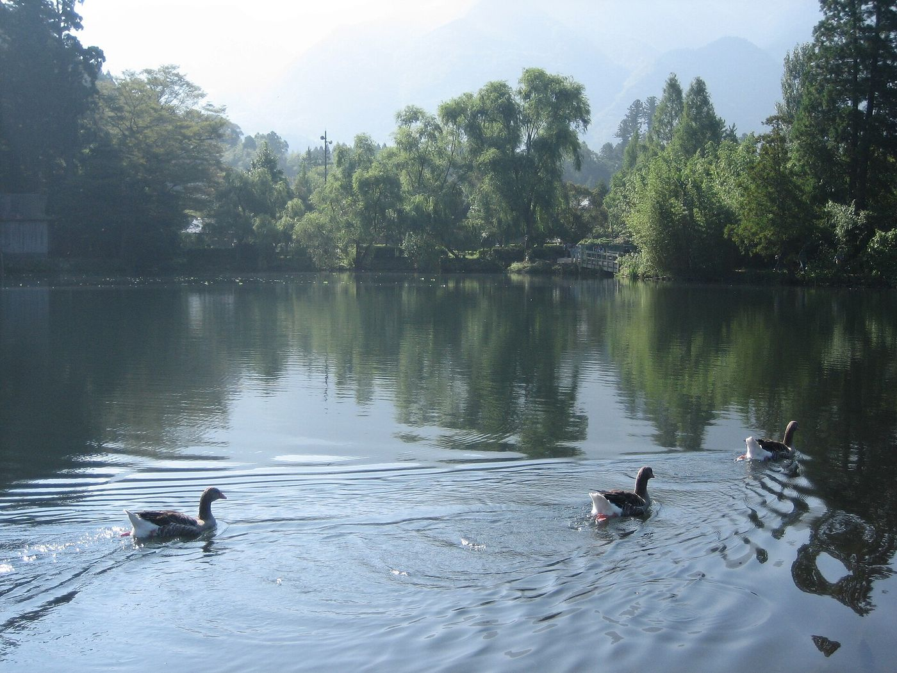
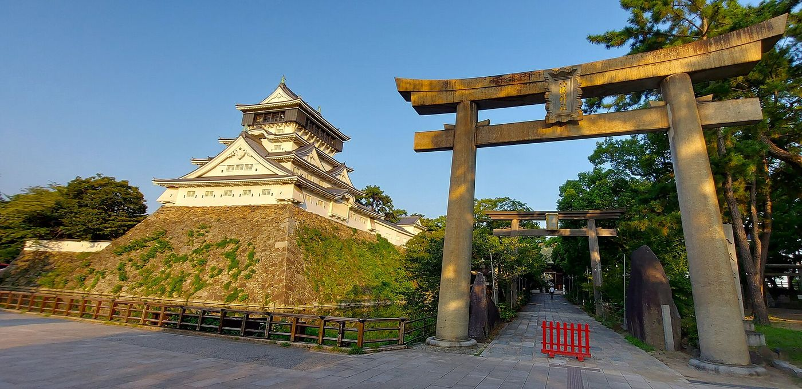
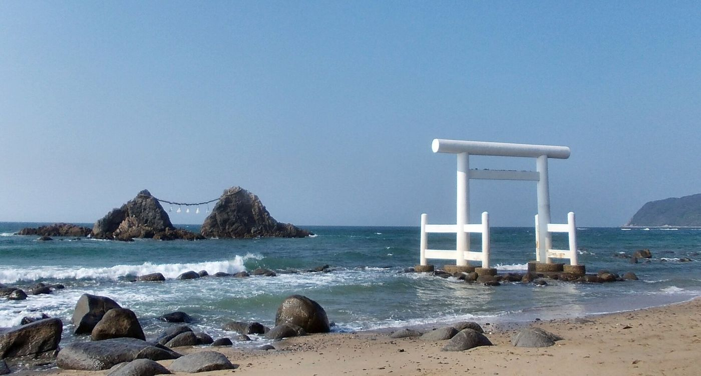

The original sheet colour-coded the pre-booked ticketed experiences (Klook PASS type); they are marked pass here.
| Time | Day 1 | Day 2 | Day 3 | Day 4 |
|---|---|---|---|---|
| Morning | 06:00 flight / 09:20 arrive Busan 11:00 Subway to hotel, drop bags |
08:30 Wake up, breakfast 10:00–11:30 Taxi to Haedong Yonggungsa |
10:00–11:30 Walk around Cheongsapo Skywalk (bread at diart coffee) |
10:00 Check out Free choice: Oryukdo Skywalk / Gamcheon Culture Village / Taejongdae |
| Afternoon | 12:00–14:00 Jagalchi Market 14:10–16:00 Songdo Cable Car pass, Songdo Skywalk, Yonggung Cloud Bridge, Sky Harbor observatory |
11:30 Lunch at Lotte Premium Outlet 13:00 Skyline Luge pass 15:30 Haeundae beach market |
11:30 Sky Capsule (Cheongsapo→Mipo) 12:30 Haeundae Traditional Market 14:30 Shinsegae Spa Land pass |
Shopping in Seomyeon 15:30 Meet for a meal, collect luggage |
| Evening | 16:10~ Free time, back to hotel Bupyeong Kkangtong Market / Busan Tower / Lotte Dept. Store / Nampo-dong |
17:00 BUSAN X the SKY, 100F pass + The Bay 101 19:00 Obanjang BBQ dinner |
17:00 Gwangalli Beach 19:00 Gwangalli bars |
18:00 ferry check-in |
| Time | Day 5 | Day 6 | Day 7 | Day 8 | Day 9 |
|---|---|---|---|---|---|
| Morning | 08:00 ferry arrives Hakata 09:00 Store bags at Hakata Stn., pick up car 10:15–10:48 Ferry + bus to Nokonoshima |
09:00–10:30 Ukiha Inari Shrine (torii tunnel) |
11:00 Check out 11:30 Local Beppu hot spring |
09:30–13:00 Itoshima: Sakurai Futamigaura, Sakurai Shrine 11:00 Lunch at Itoshima Kaisendo (reserved) |
Free time |
| Afternoon | 12:33/13:15 Bus back to port 14:10 Lunch in Hakata 16:00–18:00 Dazaifu |
11:30–14:30 Yufuin Yunotsubo street / Lake Kinrin / Tenso Shrine 15:00 Check in at Suginoi Hotel |
13:00 Kokura Castle 14:30 Tanga Market Riverwalk, Chuo shopping street, Uomachi Ginten-gai |
13:20 Keya no Oto + boat 15:20 Back to Fukuoka 16:20 return car |
16:30 Meet at Hakata Station |
| Evening | 18:30 Back in Hakata 19:00 Yakuin yakiniku (reserved) |
15:00~ Free time in Beppu Kasumi-Kirin lookout / Suginoi baths |
Dinner: unagi at Inakaan 20:00 Drive back to Fukuoka |
18:30 Daimyo Hete 2 (tabelog reservation) | 18:30 Leave Hakata Stn. 19:00 Airport 21:00 take off |



The sheet marks this day "for reference only" — everyone plans their own morning, then the group meets before boarding.



